Overview
I used PixNerd to denoise, generate, and edit images, then trained my own flow-matching UNets on MNIST.
Part A: Exploring Flow Models
I used PixNerd with “a high quality photo” as the default prompt. Sampling uses a step size of 0.02, with w = 7 for the guided results.
1.1: Constructing Noisy Inputs
I used this gorilla photo for the denoising experiments, keeping the same noise so the results are easier to compare.
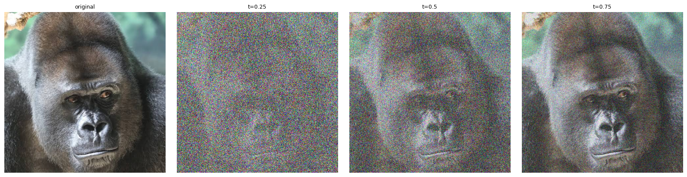
1.2: Classical Denoising
I tried a few blur strengths and kept the one with the lowest error against the original. It gets rid of some noise, but takes a lot of the fur detail with it.


1.3: One-Step Denoising
The face comes back much more clearly than with blur. The fur still looks a little too smooth, especially in the noisier example.


1.4: Visualizing Velocity
The error is easiest to see around the face and fur. I kept the display scales the same across all three times so the heatmaps can be compared.
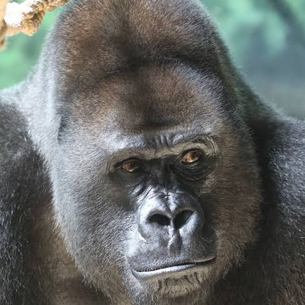


1.5: Iterative Denoising
Starting halfway through, the gorilla gradually comes back over 25 steps. I also checked the sampler with a constant velocity, including a case where the last step had to be shortened.
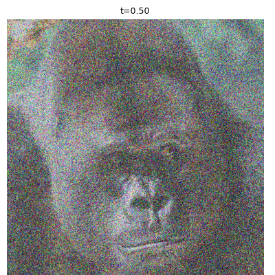
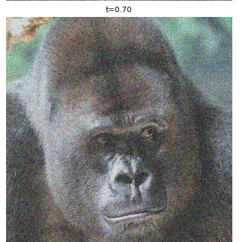
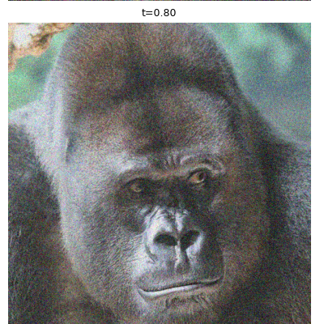
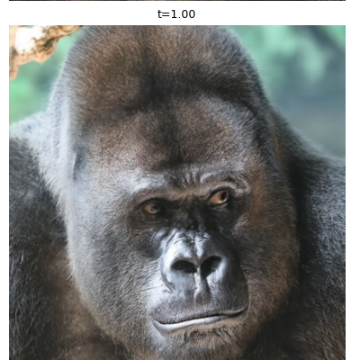
Comparing the methods
Euler gives the fur more texture, while the one-step result looks smoother. Interestingly, the one-step result has the lowest MSE, even though Euler looks sharper.
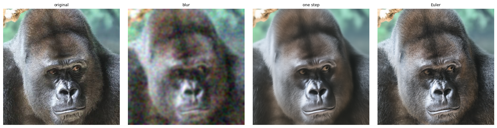
1.6: Generating Images from Noise
All five results from “a high quality photo” turned out to be portraits, even though I never asked for people. The model seems to lean toward faces with this prompt. A few look fairly normal, while others have missing features or strange proportions.

2.1: Classifier-Free Guidance
With CFG, the same starting noise gives much cleaner faces. The results look more like finished photos, which fits the prompt better. They also start to look alike, with similar lighting and very smooth skin. So the quality improves, but there is less variety than without guidance.

3.1: Image-to-Image Editing
At the noisier starting points, the gorilla and street turn into people or completely unrelated objects. With less noise, more of the original comes through.
Campanile and two test images

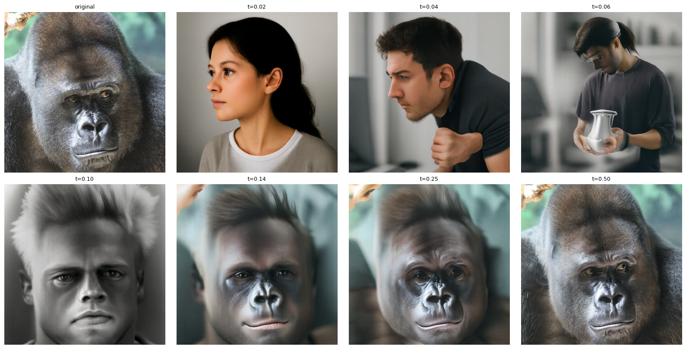
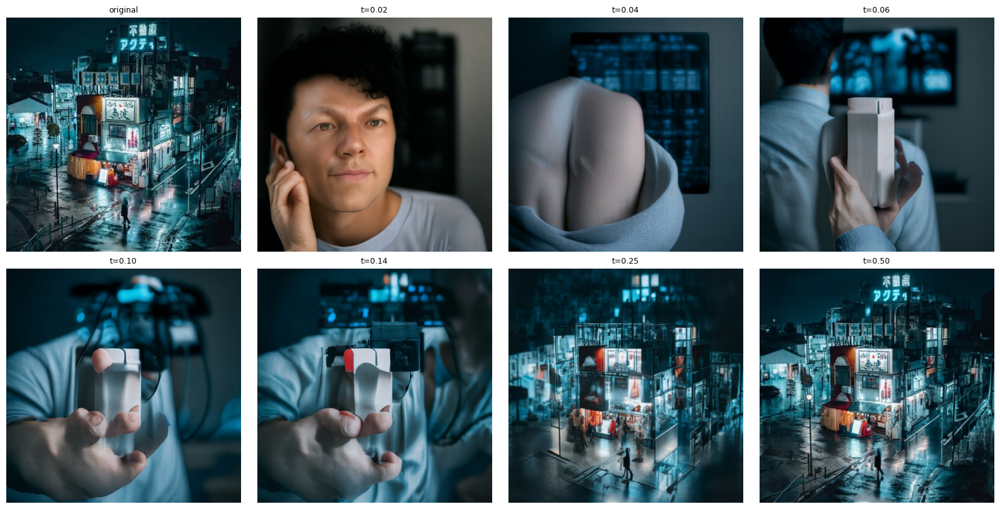
Web image and drawings
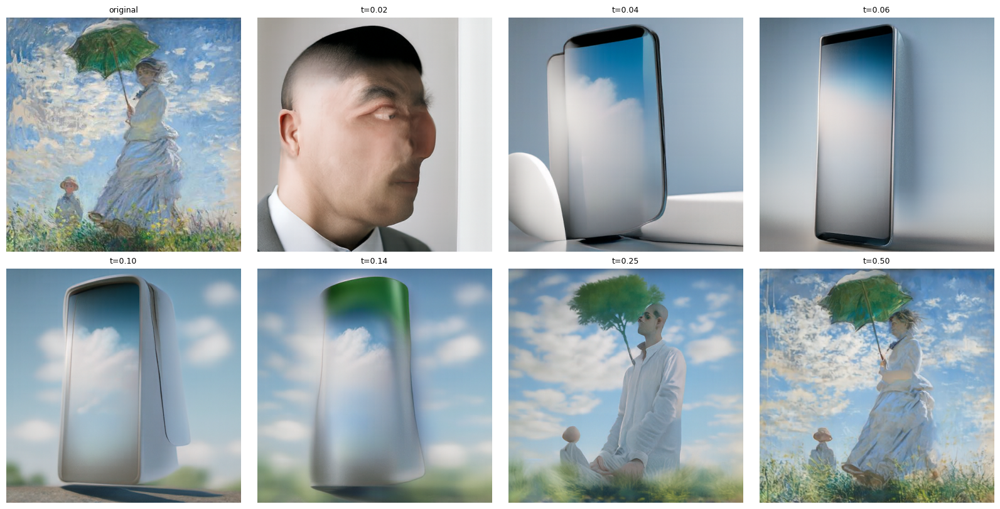
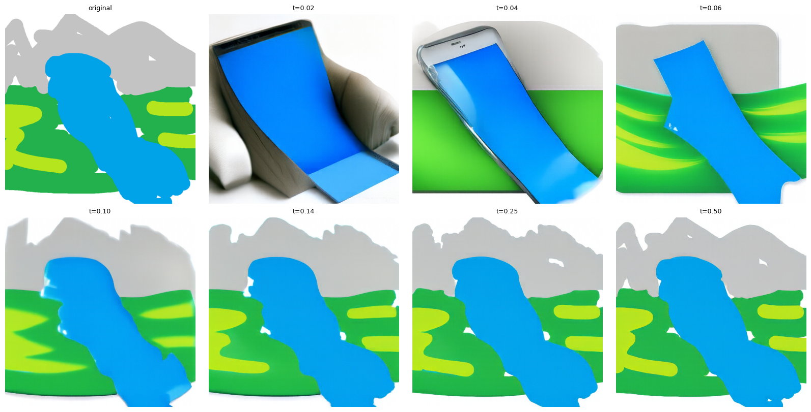
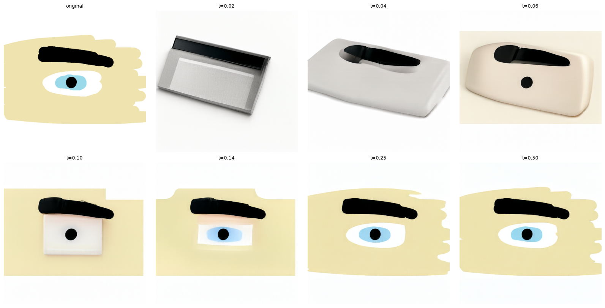
3.2: Text-Guided Editing
Same seven starting times and settings, with one new prompt per input.
Campanile → “a massive egg”
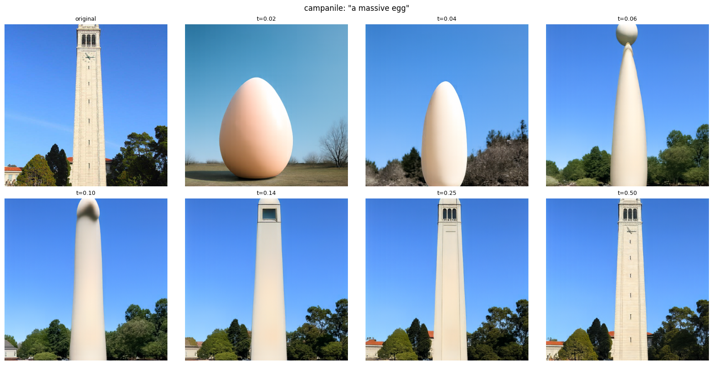
Gorilla → “darth vader”
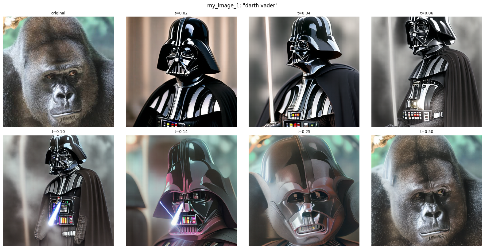
Street → “an image of a black hole”
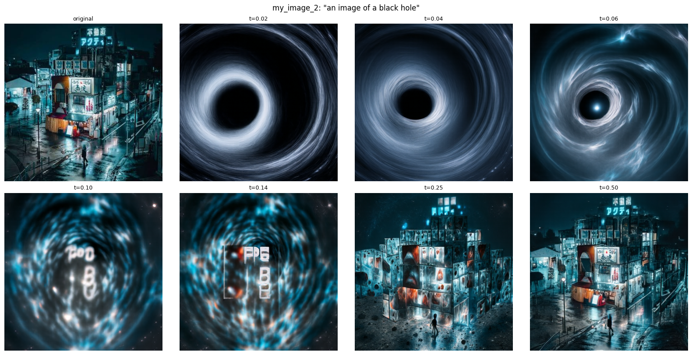
3.3: Visual Anagrams
Each pair shows the same image upright and upside down. The old man's face becomes the fire, and the snowy village turns into a horse.


3.4: Hybrid Images
The smaller views help bring out the distant subject. The skull works better here; the cat is harder to make out, though the treetops suggest its ears.


Part B: Flow Matching from Scratch
I started with single-step denoising, then trained models that could generate digits from noise. Training uses the MNIST training set, and the denoising comparisons use test images.
1.1: Implementing the UNet
I followed the given UNet architecture, using a hidden width of 128 for denoising and 64 for flow matching.
1.2: Noising MNIST
The same training digit at all seven noise levels:
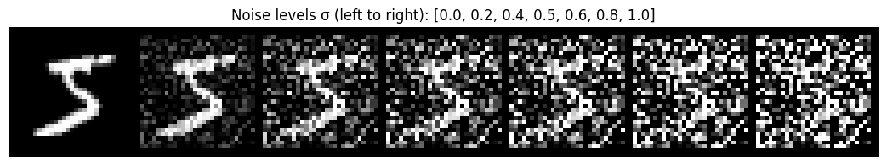
1.2.1: Training a Denoiser
Most digits are already readable after one epoch, and the strokes look cleaner after five. The rows show clean, noisy, and denoised images, using the same test inputs for both.
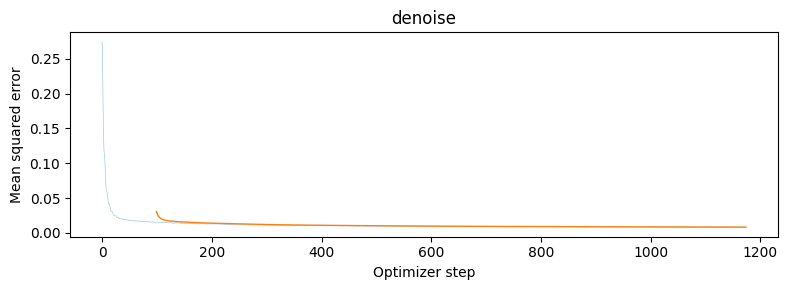
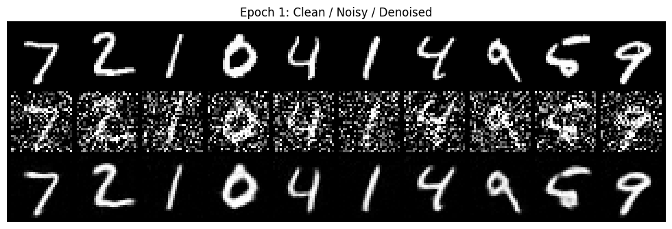
1.2.2: Out-of-Distribution Testing
The model handles a range of noise levels pretty well, despite only training at σ = 0.5. At the highest levels, extra strokes start appearing on the 7. Noisy inputs are on top, with the outputs below.
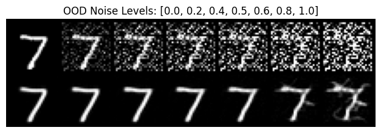
1.2.3: Denoising Pure Noise
The outputs all look like the same blurry digit, even after more training. Since the noise has nothing to do with the target, the model has no way to tell which digit it should produce. With MSE loss, it ends up predicting something close to the average MNIST image. That mixes the strokes from different digits together, giving these faint, overlapping loops.
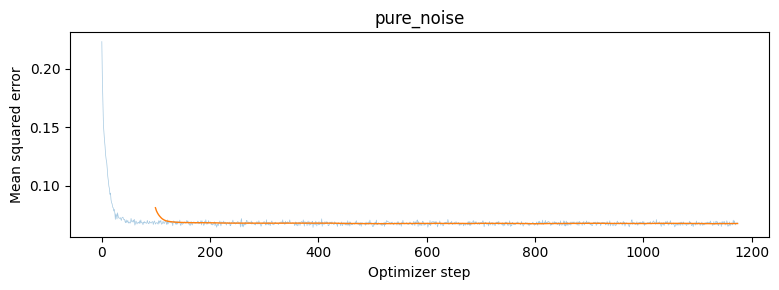
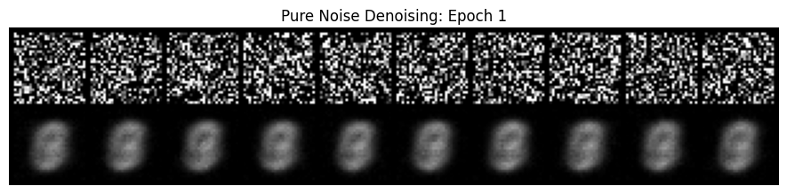
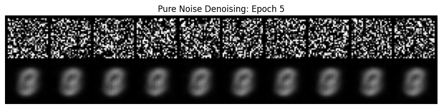
2.1: Time Conditioning
I added the time embeddings to the UNet so it could learn how to move toward a digit at different points in the process.
2.2: Training the Time-Conditioned UNet
I trained for ten epochs using the suggested settings. The loss drops quickly at first, then improves more slowly.
2.3: Sampling with Time Conditioning
The first epoch gives a lot of broken strokes and shapes that don't quite look like digits. By epochs five and ten, more are recognizable, though a few are still hard to read.
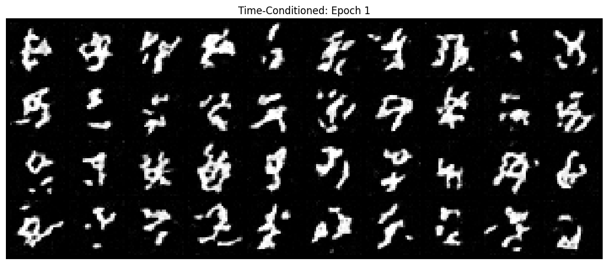
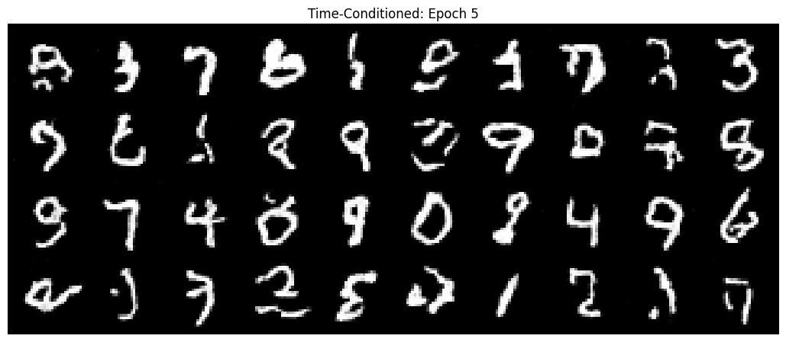
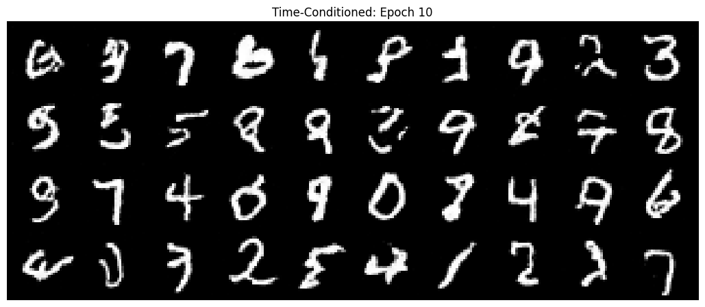
2.4: Class Conditioning
I added the digit label as another input, dropping it 10% of the time so the model could also sample without a label.
2.5: Training the Class-Conditioned UNet
I trained for ten epochs, both with and without the learning rate scheduler. The two runs start from the same seed.

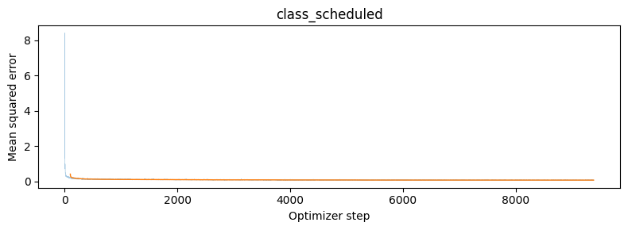

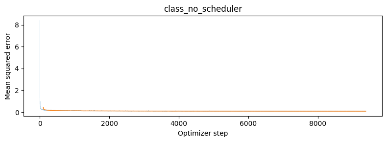
2.6: Class-Conditioned Sampling
Giving the model a label makes the results much easier to read than the time-only samples. Each column shows four examples of a digit, from 0 through 9, sampled with guidance scale 5.
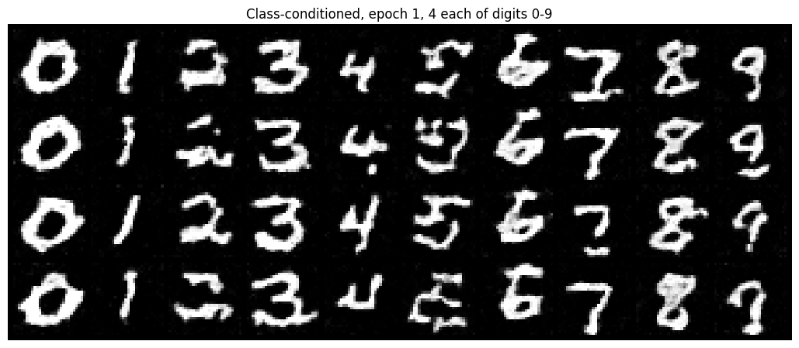
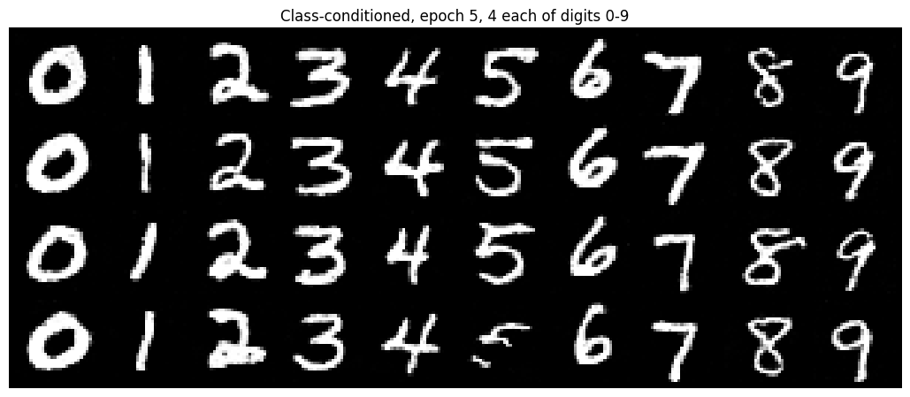
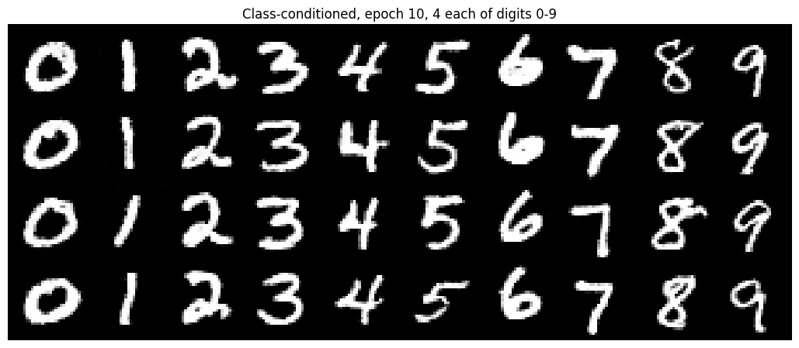
Removing the scheduler
Without the scheduler, I kept the learning rate at 0.01 for all ten epochs. I left the rest of the setup alone to see how much difference that made. The digits were still readable, so I didn't make any extra adjustments to compensate. The loss curves look similar overall, with a quick drop followed by much slower improvement. I don't see a big difference in the final digits either, though both runs have a few rough strokes.
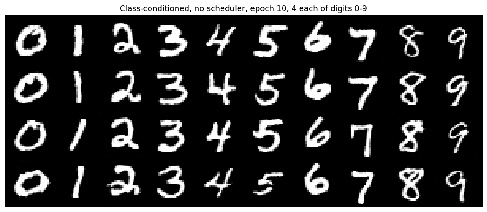
References
Assignment: Part A · Part B. All results shown here are from my completed project notebooks.